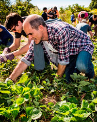

Eco-Trips and Travel
What is Ecotourism ?

What does Ecotourism mean, and why should you care?
Ecotourism is now defined as "responsible travel to natural areas that conserves the environment, sustains the well-being of the local people, and involves interpretation and education" (TIES, 2015). Education is meant to be inclusive of both staff and guests.
Principles of Ecotourism
Ecotourism is about uniting conservation, communities, and sustainable travel. This means that those who implement, participate in and market ecotourism activities should adopt the following ecotourism principles:
With advances in transportation and information technology, even the most remote places on Earth are within reach of the traveler. In fact, tourism is now the world's largest industry, with nature tourism the fastest growing segment.
People want to experience nature and the world, but should try to do so in a way that doesn't impact the natural environment.
In response to this increasing appreciation of nature experiences, a new travel ethic has arisen called ecotourism.
The Nature Conservancy adopts the definition articulated by the World Conservation Union (IUCN):
"Environmentally responsible travel to natural areas, in order to enjoy and appreciate nature (and accompanying cultural features, both past and present) that promote conservation, have a low visitor impact and provide for beneficially active socio-economic involvement of local peoples."
Most tourism in natural areas today is not ecotourism and is not, therefore, sustainable. Ecotourism is distinguished by its emphasis on conservation, education, traveler responsibility and active community participation. Specifically, ecotourism possesses the following characteristics:
Increased tourism to sensitive natural areas without appropriate planning and management can threaten the integrity of ecosystems and local cultures. The increase of visitors to ecologically sensitive areas can lead to significant environmental degradation. Likewise, local communities and indigenous cultures can be harmed in numerous ways by an influx of foreign visitors and wealth. Additionally, fluctuations in climate, currency exchange rates, and political and social conditions can make over-dependence upon tourism a risky business.
However, this same growth creates significant opportunities for both conservation and local communities. Ecotourism can provide much-needed revenues for the protection of national parks and other natural areas -- revenues that might not be available from other sources.
Additionally, ecotourism can provide a viable economic development alternative for local communities with few other income-generating options. Moreover, ecotourism can increase the level of education and activism among travelers, making them more enthusiastic and effective agents of conservation.
Ideally, ecotourism should and hellip
Travels Available